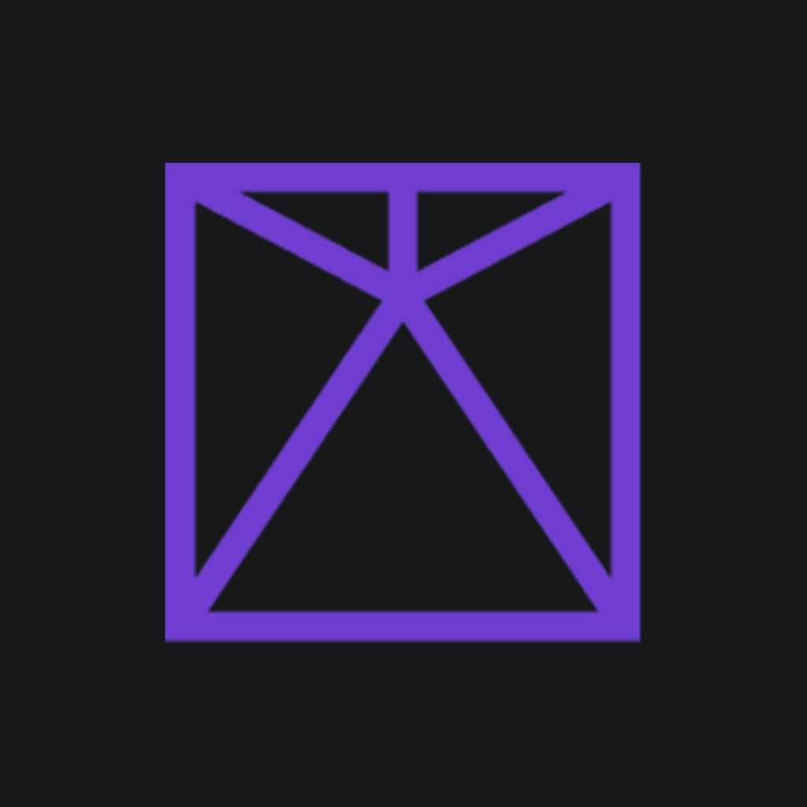

by Alex VНа сайте PubMed у каждой статьи есть номер PMID. Вставь его сюда — программа сама подставит название, фамилию первого автора, год и журнал и оформит строку для списка литературы: Название (Автор, Год).
Можно ввести один PMID или несколько через запятую. Программа обращается к PubMed через небольшой сервер на твоём компьютере: запусти файл start-server.bat в этой папке (или в терминале команду npm start) и открой страницу по ссылке, которую он покажет — обычно это адрес на localhost.